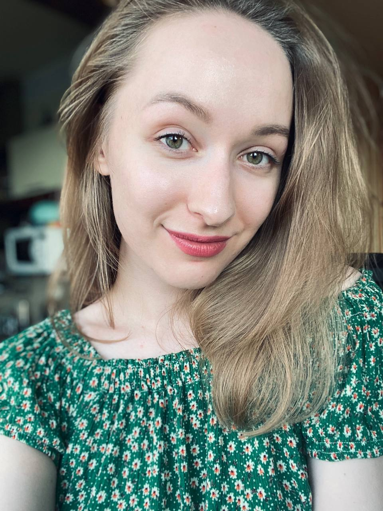

|

|
Привет!
Меня зовут Лера. Вообще я менеджер проектов, но уже давно поглядывала в сторону разработки. Я бы описала это как "ничего не понятно, но очень интересно".
Поэтому я немного изучила, как это работает, и захотела сделать тестовую страничку. Когда я думала, что же мне тут написать, я вспомнила троих моих очень хороших коллег-разработчиков, которые вдохновили меня и подсказали, с чего можно начать (Влад, посылаю большое сердечко).
|
Итак, начнем.
Я бы хотела кратко рассказать о каждом из них и поделиться своим впечатлением об этих потрясающих ребятах (дисклеймер: осторожно, возможно повышение самооценки!).
- Юра Стрельченя - тим лид отдела разработки
- Юра - очень спокойный и приятный парень. Он очень часто заставляет меня смеяться, что не может не радовать даже в тяжелые дни. Мне видится в нем большой потенциал, который позволит стать ему тем, кем он только пожелает, а еще он ставит очень милых щенков на аватарку (пёсик реально очень похож на Юру). Мне кажется, Юра очень понимающий человек, и я уверена, он готов поддержать друга в трудную минуту.
- Влад Гейер - ассистент Юры
- Я вижу во Владе человека с очень большими амбициями, которые, к слову, оправданы. Я разделяю его постоянное желание двигаться вперед и развиваться и искренне верю, что у него все получится. Внутри Влада горит огонёк, который не может не привлекать окружающих, он рождает интерес внутри и очень мотивирует. Несмотря на сильный характер лидера, внутри я разглядела в нём очень доброго, по-своему мягкого и заботливого человека.
- Денис Гибадуллин - ассистент ассистента Юры
- Первое, что замечаешь в Денисе - это его искренность и какая-то душевная доброта. Помимо его надежности, я думаю, он умеет очень тонко чувствовать людей. Я очень разделяю его желание заниматься музыкой - помню, как на корпоративе восторженно распрашивала его, где он занимается и что умеет (оказалось, петь он умеет не хуже!). А еще Денис - большой джентельмен. Я уверена, что он еще заявит о себе и всех своих талантах.
Контакты
Если вам, как и мне, понравились эти ребята и вы хотите сказать им другие приятные слова, то вот, пожалуйста, напишите им, я думаю, они очень будут рады.
Завершение
Я очень старалась и даже вложила частичку души в контент этой странички. Поэтому буду рада, если вы заполните небольшую форму ниже.
Написать Лере
Спасибо за внимание!
Это я еще css не изучила, но обещаю, я сделаю шедевр. Обнимаю:)